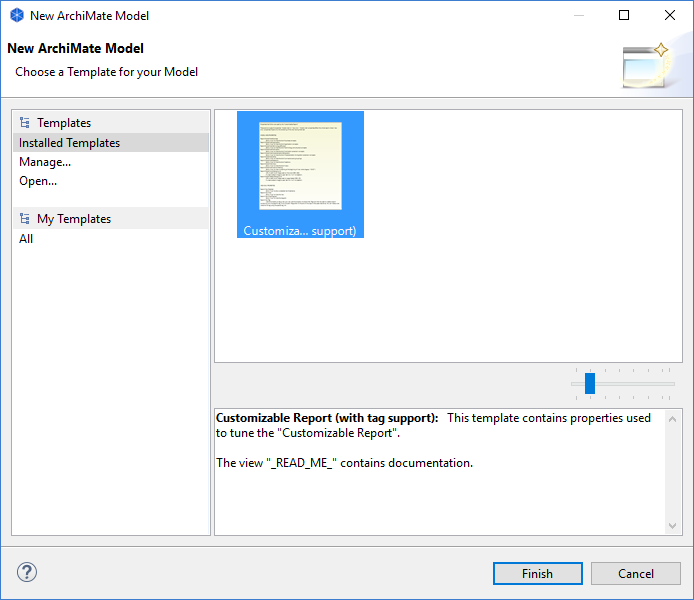

从模板创建新模型
要基于现有模板创建新模型，请执行以下步骤：
- 从主菜单中选择“文件->新建->来自模板的模型...”菜单项。将打开一个向导：

- 选择所需的模板。有些在“已安装的模板”部分提供，而用户创建的模板在“我的模板”部分的类别中列出（请参阅“创建新模板”） .所选模板的名称和说明会显示在图库的预览窗口中。
- 您可以通过在图库中的缩略图上左右移动鼠标来预览模板的所有缩略图。您还可以使用调整大小滑块控件调整图库中图像的大小。
- 如果您希望从向导中未显示的文件中打开模板，请选择“打开...”项。文件对话框将允许您选择“*.architemplate”模板文件。
- 按完成。一个新模型被创建并添加到模型树中。模型名称以“(new)”为前缀。